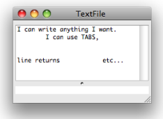
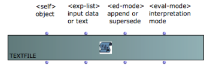
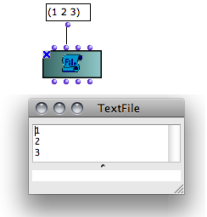
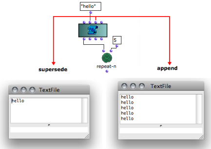
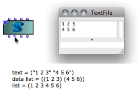

OpenMusic DocumentationHiérarchie de section : OM 6.6 User Manual > Basic Tools > TextFile > TextFile Edition
OpenMusic DocumentationHiérarchie de section : OM 6.6 User Manual > Basic Tools > TextFile > TextFile Edition
Navigation : page précédente | page suivante
Attention, votre navigateur ne supporte pas le javascript ou celui-ci à été désactivé. Certaines fonctionnalités de ce guide sont restreintes.
TextFile Edition
The Text Editor

|
The textfile box has a basic editor where texts can be edited or modified. Double click on the box to open the editor. |
Inputs and Outputs

The textfile object has four inputs and outputs :
"self" : the object itself
"exp-list" : set or get the content of the object from/as a list.
"ed-mode" : edition mode, determines the way contents are added in the file.
"eval-mode" : format to interprete and return the text to exp-list.
Exp-List : Contents
The " exp-list " input and output represent a textual content. The "exp-list" input accepts :
It allows to set or read the contents of the textfile box within visual programs. The implementation and interpretation of the content depends on the "eval-mode" and "ed-mode" inputs settings. |

Inputting contents with "exp-list".
|
Ed-Mode : Overwrite or Append New Data
The "ed-mode" input determines the way input data is written in the text file with successive evaluations. It offers two options :
"supersede" : the previous content is overwritten by new data.
"append" : new data is appended after the existing contents.
Hence, the results of several successive iterations can be stored in the text buffer.
Click on the input to select an option.

Left, "supersede" : each evaluation reinitializes the TextFile contents. Right, "append" : the previous contents is kept in the TextFile.
Eval-Mode : Writing Format
The "eval-mode" input determines the format of the contents returned by "exp-list". Four formats are available :
|

Three options for formatting the text contents with "eval-mode". The result appears when evaluating the "exp-list" output.
|
Références :
Plan :
- OpenMusic Documentation
- OM 6.6 User Manual
- Introduction
- System Configuration and Installation
- Going Through an OM Session
- The OM Environment
- Visual Programming I
- Visual Programming II
- Basic Tools
- Curves and Functions
- Array
- TextFile
- TextFile Edition
- Outer Environment
- Picture
- Score Objects
- Maquettes
- Sheet
- MIDI
- Audio
- SDIF
- Lisp Programming
- Errors and Problems
- OpenMusic QuickStart
Navigation : page précédente | page suivante
A propos...(c) Ircam - Centre Pompidou